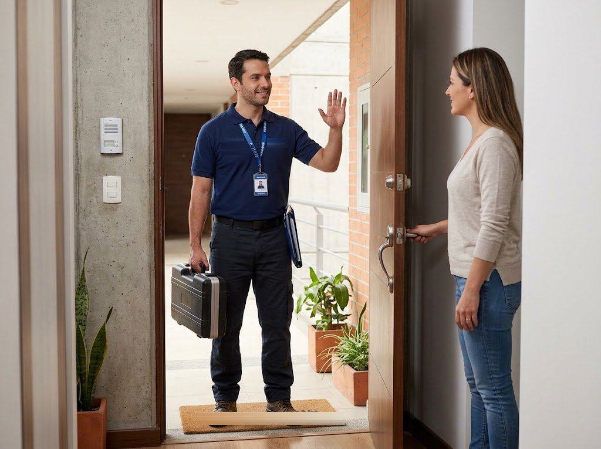
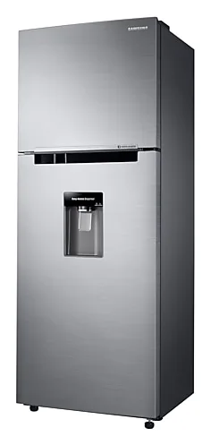
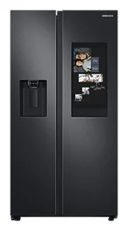
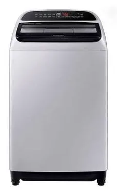
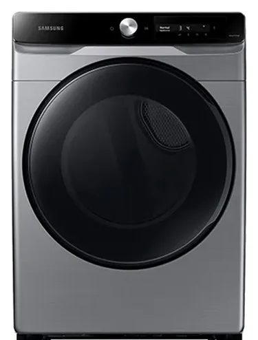
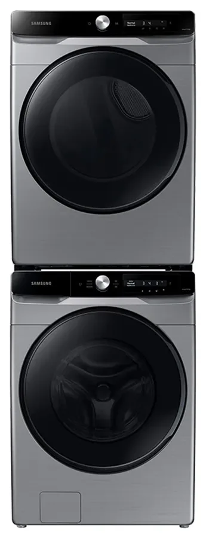

Servicio técnico Samsung cerca de mí en Panamá
Si buscas un técnico Samsung cerca de tu casa en Panamá, atendemos a domicilio en más de 30 barrios y corregimientos.

Cobertura por zonas
Llegamos a San Francisco, Bella Vista, Obarrio, Marbella, Costa del Este, Punta Pacífica, Paitilla, Betania, San Miguelito, Albrook, Arraiján, La Chorrera y más. Elige tu zona abajo.
No tienes que ir a ningún lado
Como el servicio es a domicilio, no necesitas buscar un taller cercano ni transportar tu equipo: nosotros vamos a donde está.
Servicio técnico Samsung: neveras, lavadoras y secadoras
Atendemos neveras y refrigeradoras, lavadoras de carga superior y frontal, y secadoras Samsung. Cada visita incluye diagnóstico, explicación de la falla, costo claro y garantía.
Cobertura en Ciudad de Panamá, San Miguelito y Panamá Oeste
Visitamos San Francisco, Bella Vista, Obarrio, Marbella, Costa del Este, Punta Pacífica, Paitilla, Betania, Albrook, Clayton, Arraiján, La Chorrera y más zonas. Consulta la lista completa en la página de cobertura.
Equipos Samsung que atendemos


Neveras y Refrigeradoras
Reparamos neveras y refrigeradoras Samsung a domicilio en Ciudad de Panamá: de dos puertas (Side by Side), French Door,…
Ver servicio →
Lavadoras
Reparamos lavadoras Samsung de carga superior y de carga frontal a domicilio en Ciudad de Panamá: no centrifugan, no…
Ver servicio →

Secadoras
Reparamos secadoras Samsung eléctricas y de gas a domicilio en Ciudad de Panamá: no secan, no calientan, hacen ruido,…
Ver servicio →Zonas de cobertura
Preguntas frecuentes
¿Mi zona tiene cobertura?
Mira la lista de zonas o escríbenos con tu barrio. Si no aparece, es posible que igualmente lleguemos.
Búsquedas relacionadas
¿Necesitas servicio técnico Samsung en Panamá?
Escríbenos por WhatsApp con el equipo, el modelo y la falla. Te confirmamos disponibilidad para tu zona en minutos.